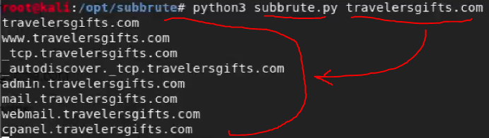

subbrute
bir sitenin subdomain adreslerini bulmamıza yarayan açık kaynak kodlu bir araçtır.
Bazen bir sitede bulamadığımız açıkları subdomainler üzerinde bulabiliyoruz, o yüzden çok önemli bir araştırmadır.
Github dan indirdikten sonra çalıştırması oldukça basittir;

işte bu şekilde çalıştırıp bu tarz subdomain adreslerini elde edebiliyoruz.